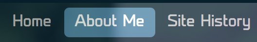
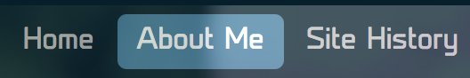

The first thing I did was choose a color scheme. I'm a fan of dark themes for UI, so I decided on a dark, navy blue color scheme. Color coordinating is tough work! I tried to go for a flat, minimalist theme but it's hard to figure out what colors should be the main or accent ones. It isn't as muted or flat as I'd like, but it's a work in progress.
I also wanted to add a banner photo to give the mainpage a personal touch. I learned that CSS can make the "background color" an image instead. So I used a picture of me from Disneyland and had the site's page links on top of it.
 It was really cool to see text and links on top of the image, but even then it was still very barebones. I didn't like the underlining and bulleting of the links, and I felt there was too much blank space between things. I wanted it to have a horizontal links bar and a site summary on the left instead of what it was currently.
It was really cool to see text and links on top of the image, but even then it was still very barebones. I didn't like the underlining and bulleting of the links, and I felt there was too much blank space between things. I wanted it to have a horizontal links bar and a site summary on the left instead of what it was currently.
It was then where I learned about float. This allowed me to make lists horizontal instead of vertical! This let me put the menu along the top of the picture, and let me place a small about me paragraph to the left of my face, which I felt filled the page MUCH better
 Looks cleaner, right? I was most proud of what happens when you mouse over the links

IT HIGHLIGHTS THE LINK YOU WANT!!! How cool is that?!?
Looks cleaner, right? I was most proud of what happens when you mouse over the links

IT HIGHLIGHTS THE LINK YOU WANT!!! How cool is that?!?It may seem strange, but I was estatic. It was the... ahem... HIGHLIGHT of this all...
To me this marked the first feature of my site that looked like a real, polished site.